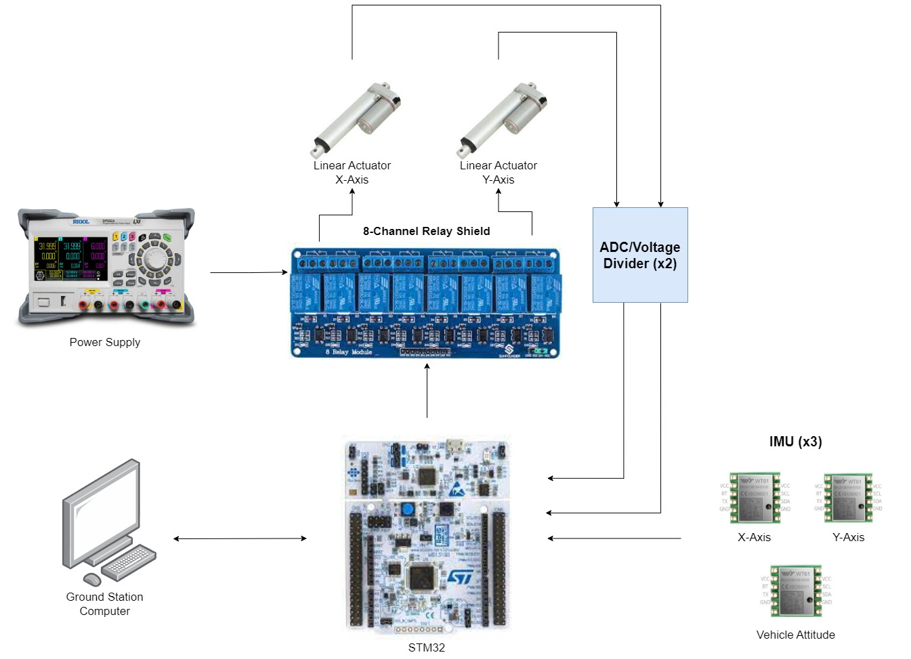
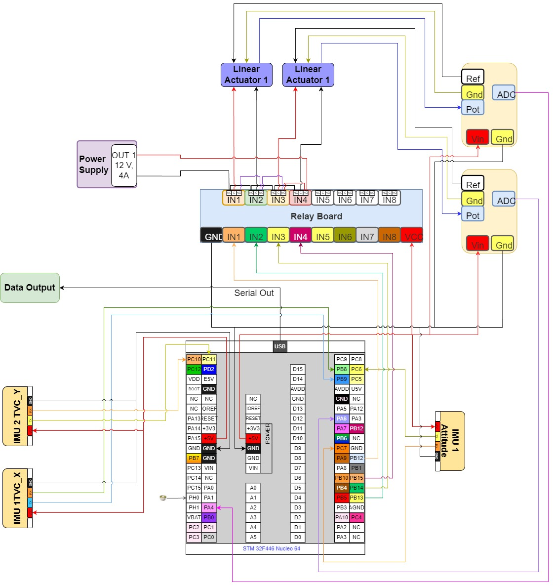

Capstone project developing a thrust vector control test stand with integrated mechanics, electronics,
and real-time control software.
Project Overview
- Designed and assembled a TVC test stand for AME 441.
- Integrated mechanical structure, actuators, sensors, and embedded electronics.
- Developed control algorithms to study translational capability and angle vs. thrust behavior.

Controls and System Constraints
- Defined system constraints including maximum thrust (300 N) and maximum gimbal angle (~11.19°).
- Used small-angle approximations and critically damped ACS assumptions for control design.
- Formulated corrective throttle compensation to maintain vertical thrust when gimbaling.

Actuator Dynamics & Kinematics
- Derived relationships between gimbal rotation (θ, ϕ) and actuator stroke (Lx, Ly).
- Used rotation matrices and system geometry to compute required actuator length changes.
- Linearized via a Jacobian to capture cross-axis coupling for small-angle motions.
Electronics & Software
- Implemented control logic on an STM32 microcontroller running C with RTOS.
- Integrated sensor suite including multiple IMUs and actuator potentiometers.
- Built redundancy and sensor fusion into the feedback loop for safety and precision.
Testing & Results
- Defined a test matrix covering axis sweeps, combined motions, and step responses.
- Collected time response data for gimbal motion (rise time, fall time, overshoot, settling time).
- Validated mapping between actuator commands and gimbal motion.
Additional imagery and build photos are available in the
images/SENIOR_DESIGN/ directory.